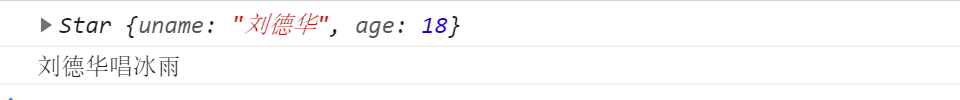

面向对象1
面向对象1
1.面向过程与面向对象
1.1面向过程
- 面向过程就是分析出解决问题所需要的步骤，然后用函数把这些步骤一步一步实现，使用的时候再一个一个的依次调用就可以了。
1.2面向对象
- 面向对象是把事务分解成为一个个对象，然后由对象之间分工与合作。
1.3面向过程与面向对象对比
| 面向过程 | 面向对象 | |
|---|---|---|
| 优点 | 性能比面向对象高，适合跟硬件联系很紧密的东西，例如单片机就采用的面向过程编程。 | 易维护、易复用、易扩展，由于面向对象有封装、继承、多态性的特性，可以设计出低耦合的系统，使系统 更加灵活、更加易于维护 |
| 缺点 | 不易维护、不易复用、不易扩展 | 性能比面向过程低 |
2.对象与类
2.1对象
对象是由属性和方法组成的：是一个无序键值对的集合,指的是一个具体的事物
- 属性：事物的特征，在对象中用属性来表示（常用名词）
- 方法：事物的行为，在对象中用方法来表示（常用动词）
2.1.1创建对象
1 | //以下代码是对对象的复习 |
如上两行代码运行结果为:
2.2类
- 在 ES6 中新增加了类的概念，可以使用 class 关键字声明一个类，之后以这个类来实例化对象。类抽象了对象的公共部分，它泛指某一大类（class）对象特指某一个，通过类实例化一个具体的对象
2.2.1创建类
- 语法:
1 | //步骤1 使用class关键字 |
- 示例
1 | // 1. 创建类 class 创建一个 明星类 |
以上代码运行结果:

通过结果我们可以看出,运行结果和使用构造函数方式一样
2.2.2类创建添加属性和方法
1 | // 1. 创建类 class 创建一个类 |
以上代码运行结果:

注意哟:
- 通过class 关键字创建类, 类名我们还是习惯性定义首字母大写
- 类里面有个constructor 函数,可以接受传递过来的参数,同时返回实例对象
- constructor 函数 只要 new 生成实例时,就会自动调用这个函数, 如果我们不写这个函数,类也会自动生成这个函数
- 多个函数方法之间不需要添加逗号分隔
- 生成实例 new 不能省略
- 语法规范, 创建类 类名后面不要加小括号,生成实例 类名后面加小括号, 构造函数不需要加function
2.2.3类的继承
- 语法
1 | // 父类 |
- 示例
1 | class Father { |
以上代码运行结果:

子类使用super关键字访问父类的方法
1
2
3
4
5
6
7
8
9
10
11
12
13
14
15
16
17
18//定义了父类
class Father {
constructor(x, y) {
this.x = x;
this.y = y;
}
sum() {
console.log(this.x + this.y);
}
}
//子元素继承父类
class Son extends Father {
constructor(x, y) {
super(x, y); //使用super调用了父类中的构造函数
}
}
var son = new Son(1, 2);
son.sum(); //结果为3注意:
继承中,如果实例化子类输出一个方法,先看子类有没有这个方法,如果有就先执行子类的
继承中,如果子类里面没有,就去查找父类有没有这个方法,如果有,就执行父类的这个方法(就近原则)
如果子类想要继承父类的方法,同时在自己内部扩展自己的方法,利用super 调用父类的构造函数,super 必须在子类this之前调用
1
2
3
4
5
6
7
8
9
10
11
12
13
14
15
16
17
18
19
20
21
22
23
24
25
26// 父类有加法方法
class Father {
constructor(x, y) {
this.x = x;
this.y = y;
}
sum() {
console.log(this.x + this.y);
}
}
// 子类继承父类加法方法 同时 扩展减法方法
class Son extends Father {
constructor(x, y) {
// 利用super 调用父类的构造函数 super 必须在子类this之前调用,放到this之后会报错
super(x, y);
this.x = x;
this.y = y;
}
subtract() {
console.log(this.x - this.y);
}
}
var son = new Son(5, 3);
son.subtract(); //2
son.sum();//8以上代码运行结果为:

时刻注意this的指向问题,类里面的共有的属性和方法一定要加this使用.
- constructor中的this指向的是new出来的实例对象
- 自定义的方法,一般也指向的new出来的实例对象
- 绑定事件之后this指向的就是触发事件的事件源
在 ES6 中类没有变量提升，所以必须先定义类，才能通过类实例化对象


3.面向对象版tab 栏切换
3.1功能需求
- 点击 tab栏,可以切换效果.
- 点击 + 号, 可以添加 tab 项和内容项.
- 点击 x 号, 可以删除当前的tab项和内容项.
- 双击tab项文字或者内容项文字可以修改里面的文字内容
3.2案例准备
- 获取到标题元素
- 获取到内容元素
- 获取到删除的小按钮 x号
- 新建js文件,定义类,添加需要的属性方法(切换,删除,增加,修改)
- 时刻注意this的指向问题
3.3切换
为获取到的标题绑定点击事件,展示对应的内容区域,存储对应的索引
1
2this.lis[i].index = i;
this.lis[i].onclick = this.toggleTab;使用排他,实现只有一个元素的显示
1
2
3
4
5
6
7
8
9
10
11toggleTab() {
//将所有的标题与内容类样式全部移除
for (var i = 0; i < this.lis.length; i++) {
this.lis[i].className = '';
this.sections[i].className = '';
}
//为当前的标题添加激活样式
this.className = 'liactive';
//为当前的内容添加激活样式
that.sections[this.index].className = 'conactive';
}
3.4添加
为添加按钮+ 绑定点击事件
1
this.add.onclick = this.addTab;
实现标题与内容的添加,做好排他处理
1
2
3
4
5
6
7
8
9
10
11addTab() {
that.clearClass();
// (1) 创建li元素和section元素
var random = Math.random();
var li = '<li class="liactive"><span>新选项卡</span><span class="iconfont icon-guanbi"> </span></li>';
var section = '<section class="conactive">测试 ' + random + '</section>';
// (2) 把这两个元素追加到对应的父元素里面
that.ul.insertAdjacentHTML('beforeend', li);
that.fsection.insertAdjacentHTML('beforeend', section);
that.init();
}
3.5删除
为元素的删除按钮x绑定点击事件
1
this.remove[i].onclick = this.removeTab;
获取到点击的删除按钮的所在的父元素的所有,删除对应的标题与内容
1
2
3
4
5
6
7
8
9
10
11
12
13
14
15removeTab(e) {
e.stopPropagation(); // 阻止冒泡 防止触发li 的切换点击事件
var index = this.parentNode.index;
console.log(index);
// 根据索引号删除对应的li 和section remove()方法可以直接删除指定的元素
that.lis[index].remove();
that.sections[index].remove();
that.init();
// 当我们删除的不是选中状态的li 的时候,原来的选中状态li保持不变
if (document.querySelector('.liactive')) return;
// 当我们删除了选中状态的这个li 的时候, 让它的前一个li 处于选定状态
index--;
// 手动调用我们的点击事件 不需要鼠标触发
that.lis[index] && that.lis[index].click();
}
3.6编辑
为元素(标题与内容)绑定双击事件
1
2this.spans[i].ondblclick = this.editTab;
this.sections[i].ondblclick = this.editTab;在双击事件处理文本选中状态,修改内部DOM节点,实现新旧value值的传递
1
2
3
4
5
6
7
8
9
10
11
12
13
14
15
16
17
18
19
20
21editTab() {
var str = this.innerHTML;
// 双击禁止选定文字
window.getSelection ? window.getSelection().removeAllRanges() : document.selection.empty();
// alert(11);
this.innerHTML = '<input type="text" />';
var input = this.children[0];
input.value = str;
input.select(); // 文本框里面的文字处于选定状态
// 当我们离开文本框就把文本框里面的值给span
input.onblur = function() {
this.parentNode.innerHTML = this.value;
};
// 按下回车也可以把文本框里面的值给span
input.onkeyup = function(e) {
if (e.keyCode === 13) {
// 手动调用表单失去焦点事件 不需要鼠标离开操作
this.blur();
}
}
}